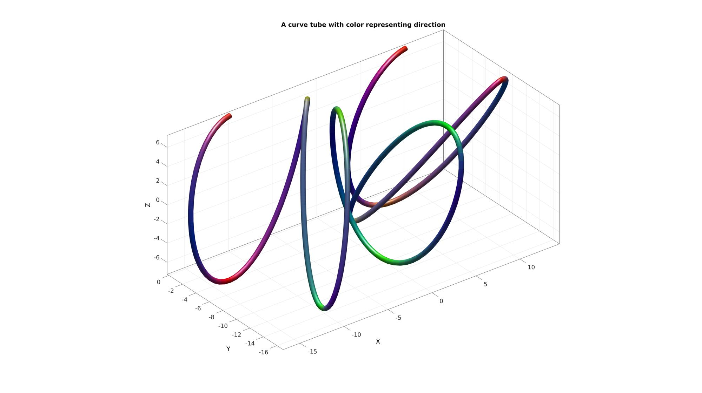
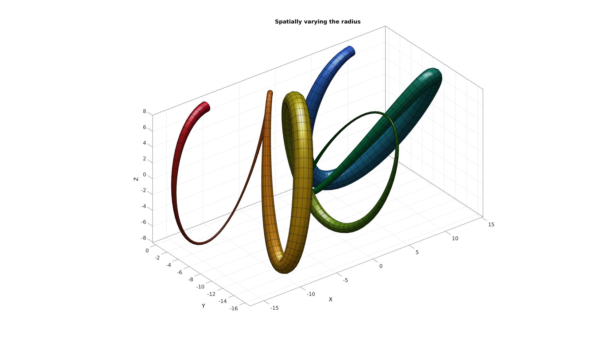
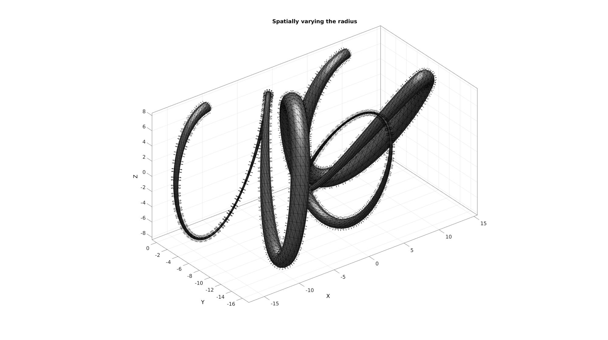
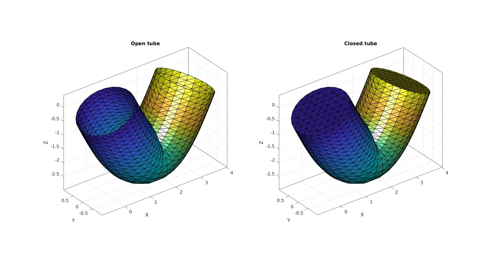
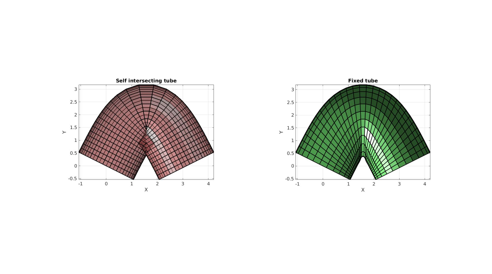

polyTube
Below is a demonstration of the features of the polyTube function
Contents
clear; close all; clc;
Syntax
[Fs,Vs,Cs,Cs_rgb,Cs_d]=polyTube(Vg,optStruct);
Description
The polyTube function can be used to
Examples
Plot settings
markerSize=15; lineWidth=2; fontSize=10;
Example 1: Creating a swept tube
Creating example curve
t=linspace(0,4*pi,50); Vg=[ t(:) sin(t(:)) cos(t(:))]; Vg=evenlySampleCurve(Vg);
Create tube
clear optStruct optStruct.r=1.2; %Radius optStruct.nr=25; %Number of points allong circumference optStruct.patchType='quad'; %Output mesh type optStruct.fixOpt=0; %Option to fix self intersection [Fs,Vs,Cs]=polyTube(Vg,optStruct);
Visualization
cFigure; subplot(1,2,1); hold on; hp1=plotV(Vg,'k.-','MarkerSize',markerSize,'LineWidth',lineWidth); axisGeom; subplot(1,2,2); hold on; hp2=gpatch(Fs,Vs,Cs,'k',1,1); axisGeom; camlight headlight; legend([hp1 hp2],{'Guide curve','Tube'}); gdrawnow;

Example 2: Variable radius
Creating example curve
t=linspace(0,1.5*pi,50);
r=linspace(0.25,1,50)'; %Defining radius allong curve
Vg=[t(:) zeros(size(t(:))) sin(t(:))];
Vg=evenlySampleCurve(Vg);
Create tube
clear optStruct optStruct.r=r; %Radius optStruct.nr=25; %Number of points allong circumference optStruct.patchType='quad'; %Output mesh type optStruct.fixOpt=0; %Option to fix self intersection [Fs,Vs,Cs]=polyTube(Vg,optStruct);
Visualization
cFigure; hold on; title('Variable radius'); gpatch(Fs,Vs,Cs,'k',1,1); axisGeom; camlight headlight; gdrawnow;
Example 3: Triangulated surface output and closed ends
Creating example curve
r=linspace(0.25,1,30)'; %Defining radius allong curve
t=linspace(0,pi,30);
Vg=[t(:) zeros(size(t(:))) -2*sin(t(:))];
Vg=evenlySampleCurve(Vg);
Create tube with open ends
clear optStruct optStruct.r=1; optStruct.nr=25; optStruct.patchType='tri'; optStruct.closeOpt=0; [Fs1,Vs1,Cs1]=polyTube(Vg,optStruct);
Create tube with closed ends
clear optStruct optStruct.r=1; optStruct.nr=25; optStruct.patchType='tri'; optStruct.closeOpt=1; [Fs2,Vs2,Cs2]=polyTube(Vg,optStruct);
Visualization
cFigure; subplot(1,2,1); hold on; title('Open tube') gpatch(Fs1,Vs1,Cs1,'k',1,1); axisGeom; camlight headlight; subplot(1,2,2); hold on; title('Closed tube') gpatch(Fs2,Vs2,Cs2,'k',1,1); axisGeom; camlight headlight; gdrawnow; 
Example 4: Using the fix option to attempt to fix self intersections
Creating example curve
t=linspace(0,pi,30); Vg=[t(:) 2*sin(t(:)) zeros(size(t(:))) ]; Vg=evenlySampleCurve(Vg);
Create tube without self-intersection fix
clear optStruct optStruct.r=1.2; optStruct.nr=25; optStruct.patchType='quad'; optStruct.fixOpt=0; [Fs1,Vs1,Cs1]=polyTube(Vg,optStruct);
Create tube with self-intersection fix
clear optStruct optStruct.r=1.2; optStruct.nr=25; optStruct.patchType='quad'; optStruct.fixOpt=1; [Fs2,Vs2,Cs2]=polyTube(Vg,optStruct);
Visualization
cFigure; subplot(1,2,1); hold on; title('Self intersecting tube') gpatch(Fs1,Vs1,'rw','k',0.5,2); axisGeom; camlight headlight; view(2); subplot(1,2,2); hold on; title('Fixed tube') gpatch(Fs2,Vs2,'gw','k',1,2); axisGeom; camlight headlight; view(2); gdrawnow; 

GIBBON www.gibboncode.org
Kevin Mattheus Moerman, gibbon.toolbox@gmail.com
GIBBON footer text
License: https://github.com/gibbonCode/GIBBON/blob/master/LICENSE
GIBBON: The Geometry and Image-based Bioengineering add-On. A toolbox for image segmentation, image-based modeling, meshing, and finite element analysis.
Copyright (C) 2006-2020 Kevin Mattheus Moerman
This program is free software: you can redistribute it and/or modify it under the terms of the GNU General Public License as published by the Free Software Foundation, either version 3 of the License, or (at your option) any later version.
This program is distributed in the hope that it will be useful, but WITHOUT ANY WARRANTY; without even the implied warranty of MERCHANTABILITY or FITNESS FOR A PARTICULAR PURPOSE. See the GNU General Public License for more details.
You should have received a copy of the GNU General Public License along with this program. If not, see http://www.gnu.org/licenses/.